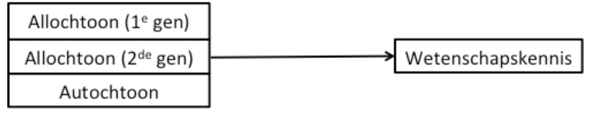
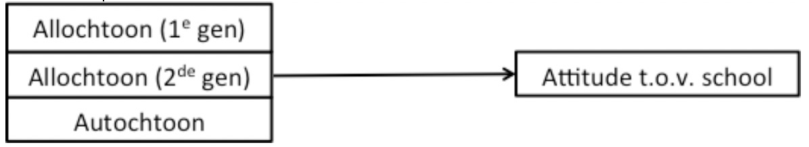
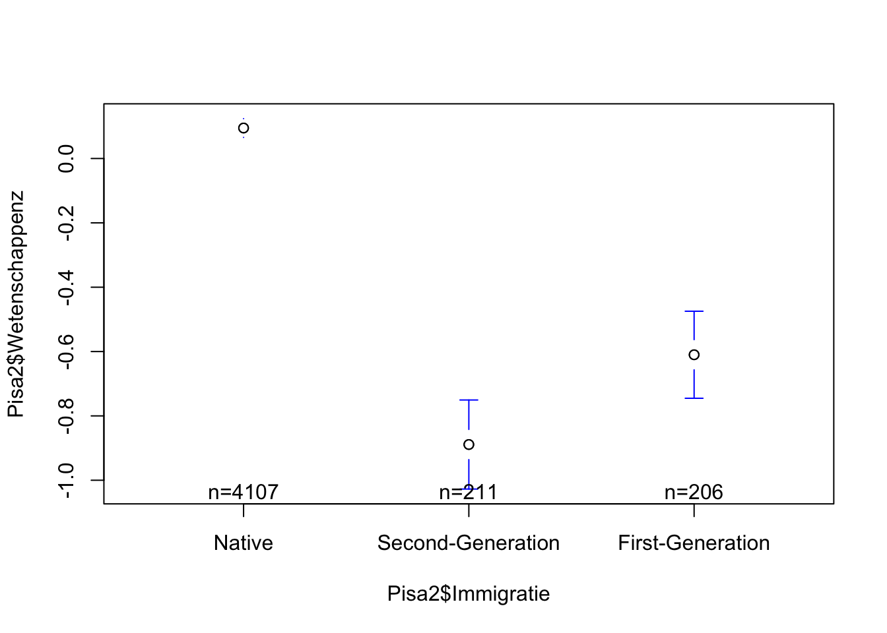
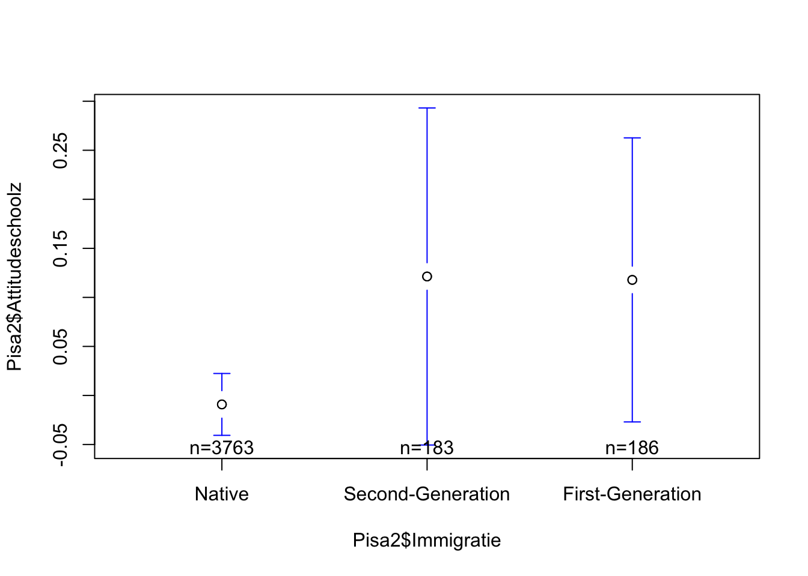

load("Data ZSO2.RData")
source("OLP2 Functies.R")ZSO 3
OPDRACHT
We pikken even de draad op bij Vraag 1 van ZSO 2. Daar diende je als jonge onderzoeker, samen met de promotor van je thesis, een projectvoorstel in om onderzoek te doen naar invloed van achtergrond van leerlingen. Jullie beloofden om met behulp van de representatieve steekproef PISA voor het Vlaamse onderwijs in kaart te brengen of en hoe groot de verschillen zijn tussen allochtone en autochtone 14-jarige leerlingen met betrekking tot wetenschapskennis en attitude ten aanzien van de school.
‘Pisa2’ is een file met daarin voor alle Vlaamse leerlingen uit de PISA-bevraging 2018 hun etnische afkomst (‘Immigratie’), sociaal-economische status (‘SESz’), hun score op een wiskunde- (‘Wiskundez’), taal- (‘Lezenz’) en wetenschappentest (‘Wetenschappenz’), de attitude van leerlingen ten aanzien van de school (‘Attitudeschoolz’) en ten aanzien van computers (‘Attitudecomputersz’) en enkele scores op leerschalen (‘Samenvattenz’, ‘Begrijpenz’, ‘Memoriserenz’).
Op de stuurgroep van je project presenteer je de eerste resultaten van je onderzoek (ZSO - Vraag 1). De kabinetschef van de minister trekt nogal fel van leer tegen je conclusies: “Ander onderzoek wijst toch uit dat allochtonen van de eerste generatie anders te beschouwen zijn dan allochtonen van de tweede generatie. Met deze resultaten kunnen wij niet naar buiten komen, ze zijn te simplistisch om de complexe werkelijkheid samen te kunnen vatten.”
Er wordt besloten dat je meer fijnmazige analyses moet doen, ditmaal een onderscheid makend tussen allochtone leerlingen van de eerste en van de tweede generatie.
Formuleer de onderzoeksvragen en hypotheses. Kies de gepaste analysetechniek.
Voer de gepaste analyses uit om de onderzoeksvragen te beantwoorden. Geef de meest relevante output van je analyses en bespreek deze. Stel het resultaat ook visueel voor.
[RESPONS ACHTERAAN DOCUMENT]
RESPONSEN
Vooraleer we de analyses kunnen uitvoeren moeten we uiteraard de data inladen in R en tevens de OLP2 Functies activeren. Dit doen we bijvoorbeeld door gebruk te maken van de commando’s load( ) en source( ).
Onderzoeksvragen
De eerste onderzoeksvraag die we uit het geschetste onderzoeksprobleem kunnen afleiden zou als volgt geformuleerd kunnen worden:
OV1: In welke mate heeft etnische afkomst een invloed op de wetenschapskennis van leerlingen?
Visueel ziet dit er als volgt uit:

Hypotheses:
Nulhypothese (H0): Er is in de populatie geen verschil in wetenschapskennis tussen leerlingen van autochtone afkomst en leerlingen van allochtone afkomst van de eerste of tweede generatie.
Alternatieve hypothese (H1): Er is in de populatie wel een verschil in wetenschapskennis tussen de drie groepen leerlingen (autochtoon, allochtoon eerste generatie, allochtoon tweede generatie).
Analysetechniek: ANOVA
Onderzoeksvraag 2 die we uit het geschetste onderzoeksprobleem kunnen afleiden kan als volgt luiden:
OV2: In welke mate beïnvloedt etnische afkomst de positieve attitude van leerlingen t.a.v. de school?
Visueel ziet dit er als volgt uit:

Hypotheses:
Nulhypothese (H0): Er is in de populatie geen verschil in attitude ten aanzien van de school tussen leerlingen van autochtone afkomst en leerlingen van allochtone afkomst van de eerste of tweede generatie.
Alternatieve hypothese (H1): Er is in de populatie wel een verschil in schoolattitude tussen de drie groepen leerlingen (autochtoon, allochtoon eerste generatie, allochtoon tweede generatie).
Analysetechniek: ANOVA
Onderzoeksvraag 3 kan als volgt geformuleerd worden:
OV3: Is de invloed van etnische afkomst op wetenschapskennis sterker dan op schoolattitude?
Analysetechniek: Deze onderzoeksvraag kan je beantwoorden a.d.h.v. de resultaten van de analyses van OV1 en OV2: de eta\(^2\) geeft hiertoe inzicht.
Analyses
OV1
Beschrijvende statistieken per categorie opvragen, samen met een Levene Test (voor die Levene Test hebben we het pakket car nodig):
library(car)
tapply(Pisa2$Wetenschappenz, Pisa2$Immigratie, mean, na.rm=TRUE) Native Second-Generation First-Generation
0.09473451 -0.88898981 -0.60996975 tapply(Pisa2$Wetenschappenz, Pisa2$Immigratie, sd, na.rm=TRUE) Native Second-Generation First-Generation
0.9540174 1.0198130 0.9846143 leveneTest(Pisa2$Wetenschappen, Pisa2$Immigratie) # vergeet library(car) niet te laden!Levene's Test for Homogeneity of Variance (center = median)
Df F value Pr(>F)
group 2 1.0716 0.3425
4521 Vooraleer we de analyses uitvoeren eerste nagaan of Pisa2$Immigratie in R als factor is opgenomen:
is.factor(Pisa2$Immigratie)[1] TRUEVervolgens de analyse uitvoeren en de resultaten samenvatten:
Model1 <- aov(Pisa2$Wetenschappenz ~ Pisa2$Immigratie)
summary(Model1) Df Sum Sq Mean Sq F value Pr(>F)
Pisa2$Immigratie 2 279 139.49 151.8 <2e-16 ***
Residuals 4521 4154 0.92
---
Signif. codes: 0 '***' 0.001 '**' 0.01 '*' 0.05 '.' 0.1 ' ' 1
72 observations deleted due to missingnessEffectgrootte nagaan en tevens een post-hoc analyse uitvoeren:
etasq(aov(Pisa2$Wetenschappenz ~ Pisa2$Immigratie)) #OLP2 functies nodig!!! Partial eta^2
Pisa2$Immigratie 0.06293106
Residuals NATukeyHSD(aov(Pisa2$Wetenschappenz ~ Pisa2$Immigratie)) Tukey multiple comparisons of means
95% family-wise confidence level
Fit: aov(formula = Pisa2$Wetenschappenz ~ Pisa2$Immigratie)
$`Pisa2$Immigratie`
diff lwr upr p adj
Second-Generation-Native -0.9837243 -1.14236355 -0.8250851 0.0000000
First-Generation-Native -0.7047043 -0.86516420 -0.5442443 0.0000000
First-Generation-Second-Generation 0.2790201 0.05889674 0.4991434 0.0083663Uit de resultaten van de Levene’s test blijkt dat de binnen-groepen-variantie voor de drie groepen (allochtoon eerste generatie, allochtoon tweede generatie en autochtoon) niet significant afwijkt van 0 (F(2,4521) = 1.072, p = 0.343). De kans dat er geen verschil is in binnen-groepen-variantie tussen de drie groepen bedraagt hier 34%. Deze kans is groter dan 0.05, dit betekent m.a.w. dat we er vanuit kunnen gaan dat er geen verschil is in binnen-groepen-variantie tussen de drie groepen. In de steekproef waren er verschillen in de gemiddelde score op de wetenschapstest tussen allochtone leerlingen van de eerste generatie (M = -0.610, SD = 0.985), van de tweede generatie (M = -0.889, SD = 1.020) en autochtone leerlingen (M = 0.095, SD = 0.954). De ANOVA-analyse geeft aan dat deze verschillen hoogstwaarschijnlijk ook in de populatie terug te vinden zijn (F(2,4521) = 151.8, p < 0.001). Dit effect van etnische origine op wetenschapskennis kunnen we omschrijven als medium in grootte (eta² = 0.063). Uit de post-hoc analyse blijkt dat alle drie de groepen statistisch significant van elkaar verschillen: autochtone leerlingen scoren beter op wetenschappen dan eerste en tweede generatie allochtone leerlingen. Eerste generatie allochtone leerlingen zijn beter in wetenschappen dan tweede generatie allochtone leerlingen.
Tot slot kunnen we grafisch de resultaten weergeven door een plot te maken met daarin de betrouwbaarheidsintervallen rond het gemiddelde per categorie voor de variabele immigratie:
errorbar(Pisa2$Wetenschappenz ~ Pisa2$Immigratie)
OV2
tapply(Pisa2$Attitudeschoolz, Pisa2$Immigratie, mean, na.rm=TRUE) Native Second-Generation First-Generation
-0.009127535 0.121309256 0.117825141 tapply(Pisa2$Attitudeschoolz, Pisa2$Immigratie, sd, na.rm=TRUE) Native Second-Generation First-Generation
0.9864208 1.1781462 1.0011141 leveneTest(Pisa2$Attitudeschoolz, Pisa2$Immigratie)Levene's Test for Homogeneity of Variance (center = median)
Df F value Pr(>F)
group 2 4.7117 0.009038 **
4129
---
Signif. codes: 0 '***' 0.001 '**' 0.01 '*' 0.05 '.' 0.1 ' ' 1is.factor(Pisa2$Immigratie)[1] TRUEoneway.test(Pisa2$Attitudeschoolz ~ Pisa2$Immigratie)
One-way analysis of means (not assuming equal variances)
data: Pisa2$Attitudeschoolz and Pisa2$Immigratie
F = 2.4125, num df = 2.00, denom df = 264.24, p-value = 0.09156etasq(aov(Pisa2$Attitudeschoolz ~ Pisa2$Immigratie)) Partial eta^2
Pisa2$Immigratie 0.001356105
Residuals NAIn de Pisa-steekproef 2009 zijn er kleine verschillen naar etnische afkomst in de mate waarin 14-jarigen een positieve attitude hebben ten aanzien van de school: eerste (M = 0.118, SD = 1.001) en tweede generatie (M = 0.121, SD = 1.178) allochtone leerlingen zijn gemiddeld gezien iets positiever dan hun autochtone medestudenten (M = -0.009, SD = 0. 986). De resultaten van de Anova-analyse, gecorrigeerd voor ongelijke varianties binnen de drie groepen (F Levene’s test(2,4129) = 4.712, p = 0.009), toont aan dat deze verschillen echter niet door te trekken zijn naar de populatie (F(2,264.24) = 2.413, p = 0.092). We verwachten dus dat in de populatie de attitude ten aanzien van de school niet verschilt naar etnische afkomst. We verwerpen de nulhypothese m.a.w. niet. De eta² geeft bovendien ook aan dat er geen effect is van etnische origine op de attitude ten aanzien van de school (eta\(^2\) = 0.001).
We kunnen het ook grafisch tonen:
errorbar(Pisa2$Attitudeschoolz ~ Pisa2$Immigratie)
OV3
Aangezien uit de analyses blijkt dat het effect van etnische afkomst op attitude t.o.v. school niet significant is (F(2,264.24) = 2.413, p = 0.092) en bovendien verwaarloosbaar klein (eta\(^2\) = 0.001), is het effect van etnische afkomst op wetenschapskennis sowieso sterker. Uit de resultaten van de Anova-analyse blijkt dat het om een medium effect gaat (F(2,4521) = 151.8, p < 0.001, eta\(^2\) = 0.063).